Thème sombre cinématique, accent rouge YouTube. Ces écrans sont la référence d'implémentation du frontend : routes, libellés, états vides / chargement / erreur inclus. Le détail des états et variantes reste documenté dans docs/produit-et-wireframes.md.
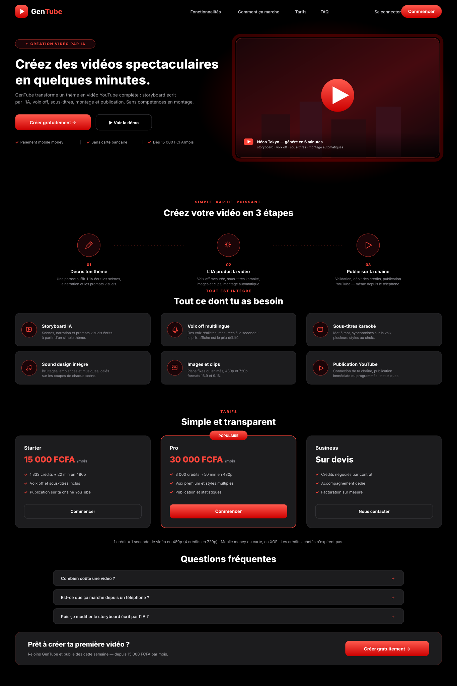
Hero avec halo rouge, parcours en 3 étapes, 6 fonctionnalités, tarifs FCFA (Starter 15 000 / Pro 30 000 / Business sur devis), FAQ, CTA final. Mention mobile money + « sans carte bancaire » dès le hero.
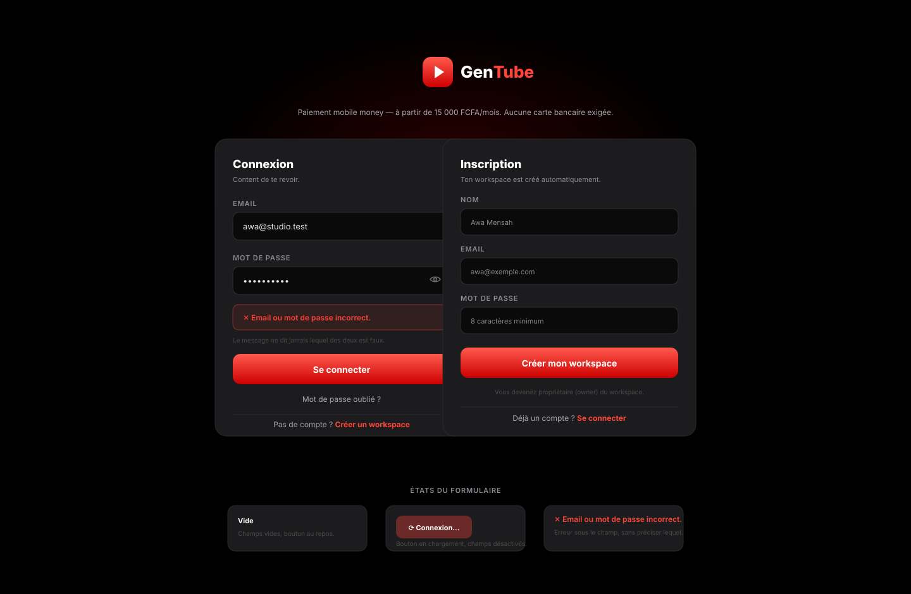
Carte connexion en état erreur (le message ne dit jamais lequel des deux champs est faux), carte inscription, et les 3 états du formulaire (vide / soumission / erreur).
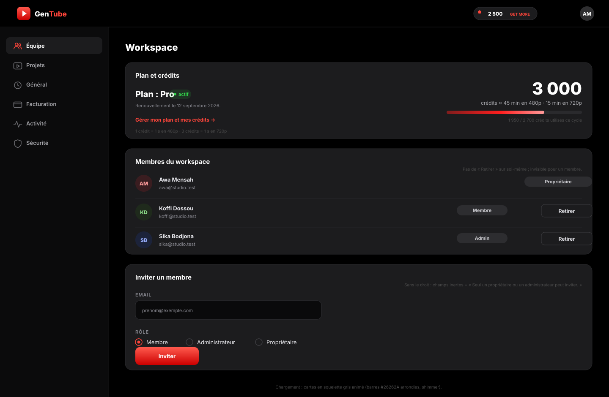
Plan + solde traduit en minutes, barre d'utilisation du cycle, membres avec rôles et « Retirer », invitation avec rôles. Widget crédits en haut à droite (style carte « CREDITS 2,500 » de la référence).
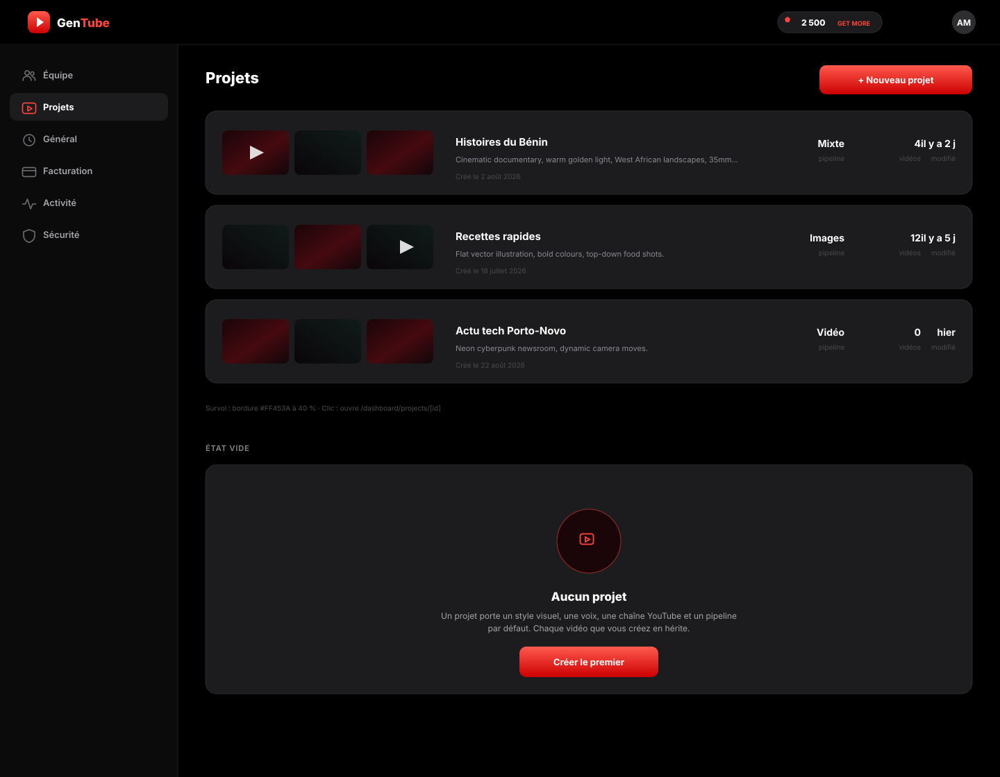
Cartes projets avec vignettes des vidéos, pipeline / nombre de vidéos / dernière modification, état vide complet.
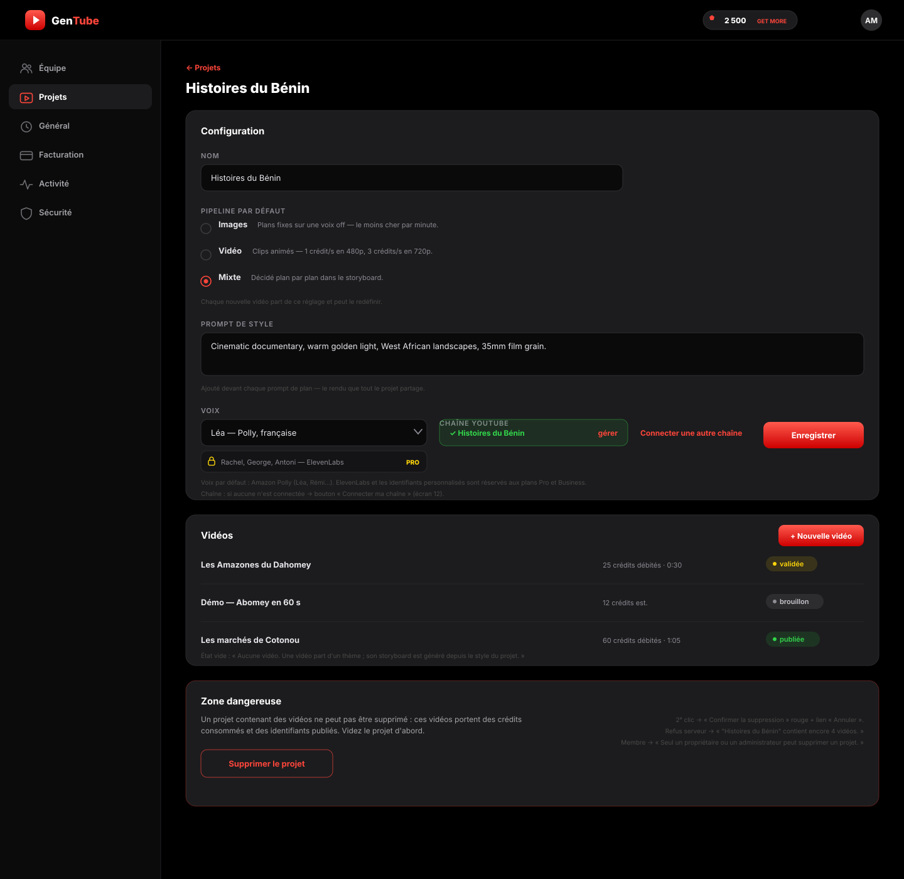
Formulaire (nom, pipeline avec conséquences prix, prompt de style), sélecteur de voix, chip de chaîne connectée, liste des vidéos avec statuts, zone dangereuse avec ses 3 variantes.
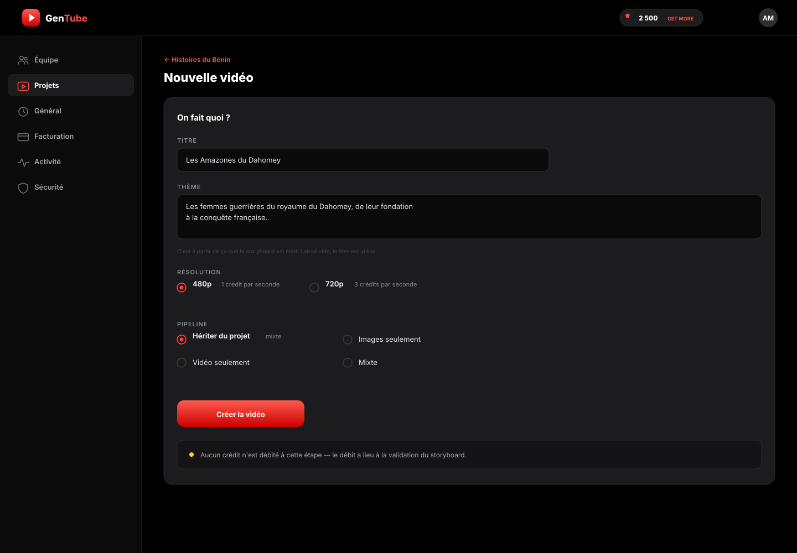
Thème en une phrase (base du storyboard), résolution avec traduction crédits/seconde, pipeline hérité ou forcé, rappel « aucun crédit débité à cette étape ».
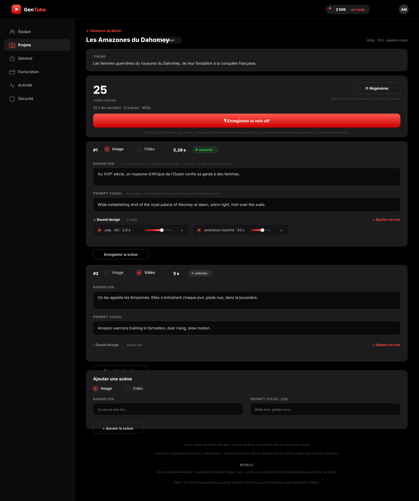
Coût estimé + CTA contextuel (« Enregistrer la voix off » puis « Valider et débiter 25 crédits »), scènes avec durée pastillée (mesurée/estimée), narration FR + prompt visuel EN, sound design par scène (chips + mini-volumes), réordonnancement, ajout de scène. Aucun champ de durée : la durée se lit puis se mesure.
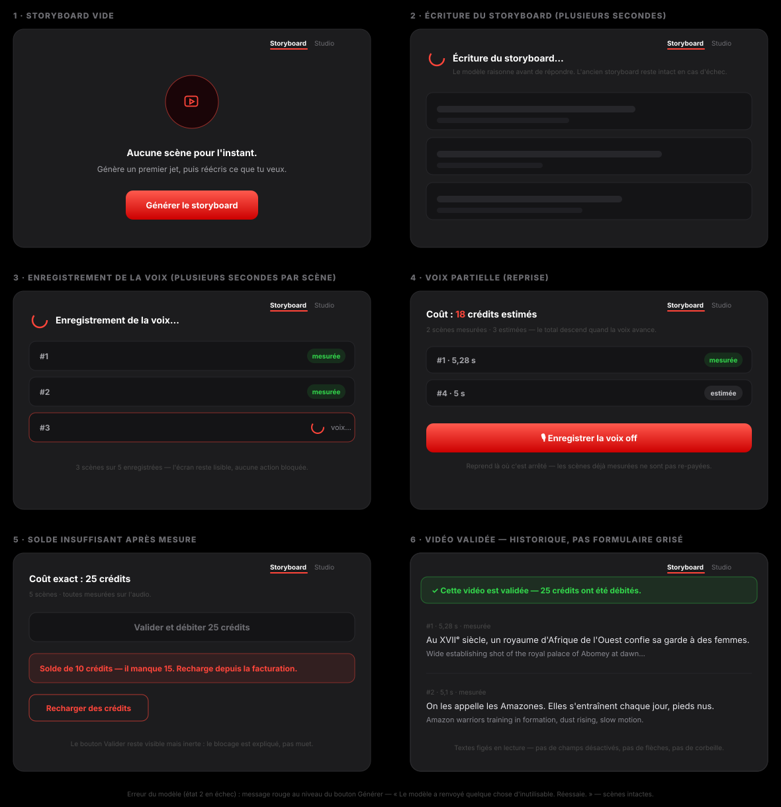
Vide · écriture en cours (squelettes) · voix off en cours · voix partielle (reprise sans re-paiement) · solde insuffisant expliqué · validée en lecture seule (historique, pas formulaire grisé).
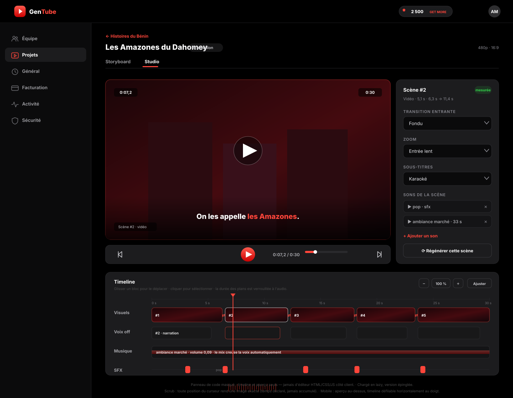
`@hyperframes/studio` embarqué : aperçu 16:9 avec scrub, transport, inspecteur de scène (transition, zoom, sous-titres, sons), timeline multi-pistes (Visuels / Voix off / Musique / SFX) avec tête de lecture et transitions ⇄. Panneau de code masqué — timeline et aperçu seuls. Chargé en lazy, version épinglée.
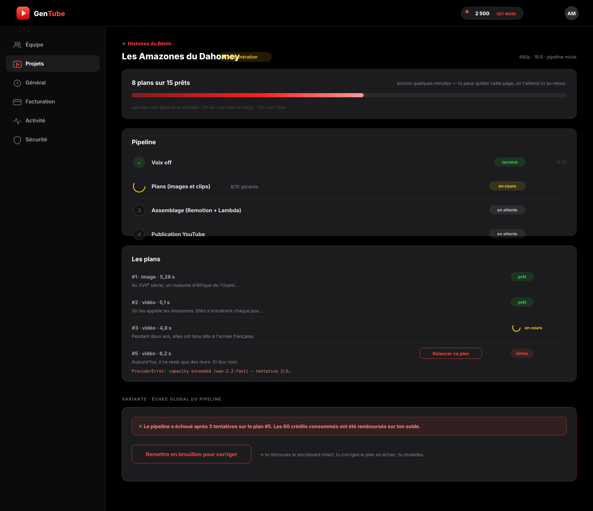
Barre globale « 8/15 prêts » + estimation floue, étapes avec horodatage, liste des plans avec relance unitaire et erreur tronquée, variante échec global (remboursement annoncé + retour en brouillon).
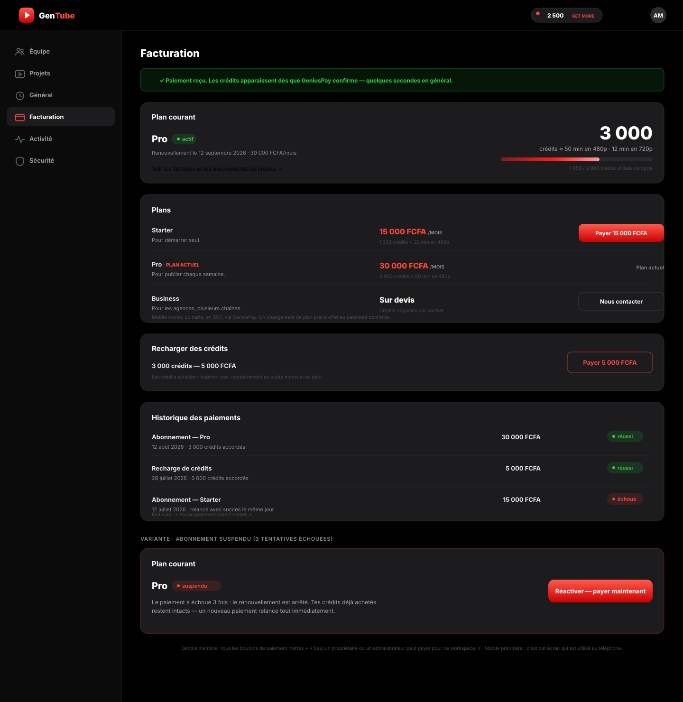
Bandeau retour de paiement (« les crédits apparaissent dès que GeniusPay confirme »), plan courant, offres (bouton rouge sauf plan actuel), recharge ponctuelle, historique avec statuts, variante abonnement suspendu.
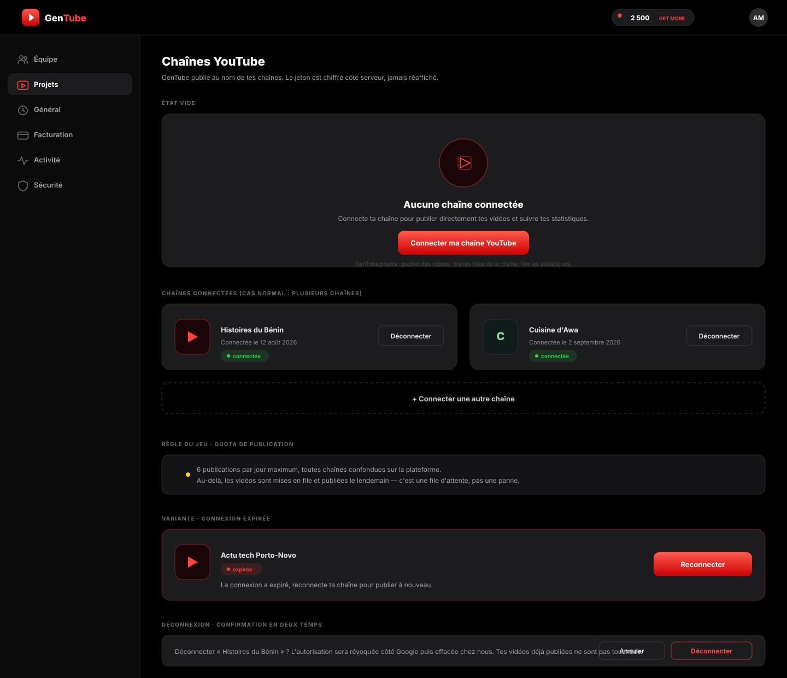
État vide avec permissions listées, multi-chaînes (cas normal), règle du quota 6/jour présentée comme règle du jeu, connexion expirée, confirmation de déconnexion en deux temps.
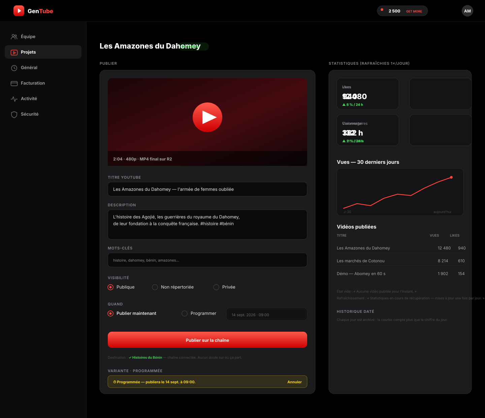
Publication : aperçu MP4, titre/description/mots-clés, visibilité, maintenant ou programmer, destination explicite. Stats : 4 KPI avec variation 24 h, courbe 30 jours (l'historique daté compte plus que le chiffre du jour), tableau des vidéos publiées.